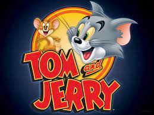
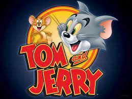

styles
internal style
about html
this is a internal style
exteranl style by using css
 

Tom and Jerry is an American animated media franchise and series of comedy short films created in 1940 by William Hanna and Joseph Barbera. Best known for its 161 theatrical short films by Metro-Goldwyn-Mayer, the series centers on the rivalry between the titular characters of a cat named Tom and a mouse named Jerry. Many shorts also feature several recurring characters. In its original run, Hanna and Barbera produced 114 Tom and Jerry shorts for MGM from 1940 to 1958.[1] During this time, they won seven Academy Awards for Best Animated Short Film, tying for first place with Walt Disney's Silly Symphonies with the most awards in the category. After the MGM cartoon studio closed in 1957, MGM revived the series with Gene Deitch directing an additional 13 Tom and Jerry shorts for Rembrandt Films from 1961 to 1962. Tom and Jerry became the highest-grossing animated short film series of that time, overtaking Looney Tunes. Chuck Jones produced another 34 shorts with Sib Tower 12 Productions between 1963 and 1967. Five more shorts have been produced since 2001, making a total of 166 shorts.